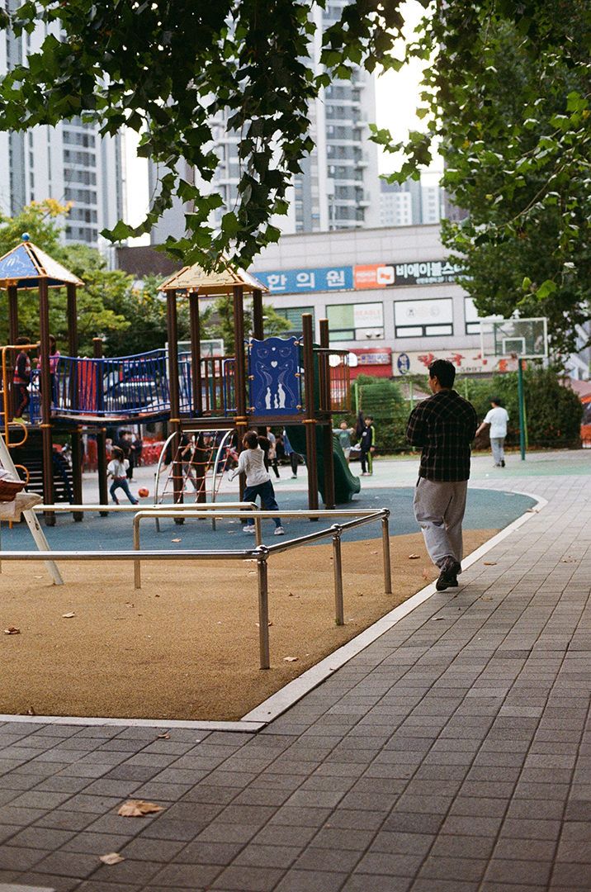
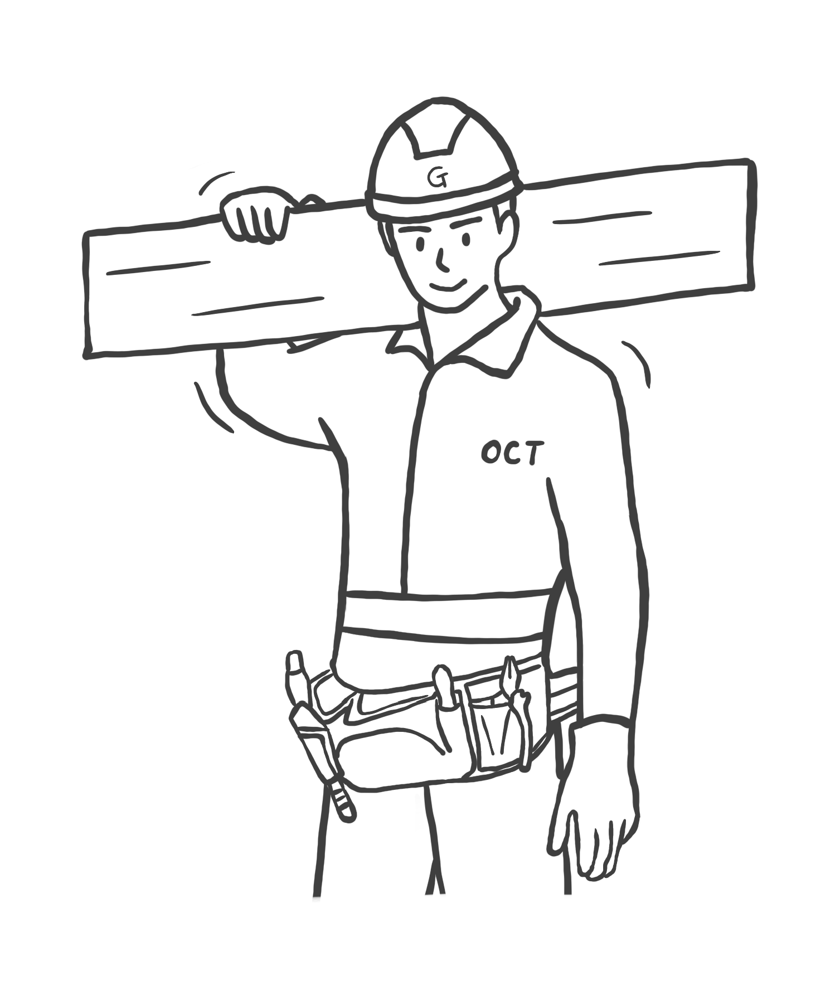
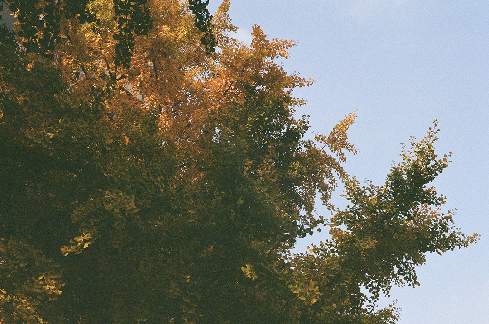

G-ARCH PROJECT

저는 29살이고 그리고 건설사에서 공사팀으로 건축 시공 업무를 담당하고 있는 호섭이라고 합니다.
건축시공이면 무슨 전공이에요?
정확히는 해양공간건축학과를 나왔어요. 해양에 있는 구조물 수변공간에 있는 건축 이런 것들을 같이 배우는 학과였어요.
처음에 가게된 계기가 있어요?
고등학생 때 멀리 떨어져 보고 싶다. 하는 마음에서 시작됐어요. 그리고 바다를 또 좋아하기도 했고. 그랬는데 학교가 섬에 있다? 학교가 섬에 있어요. 방파제 이렇게 이어져 있고, 그게 너무 멋지잖아요. 그냥 건축이 아니라 해양 공간 건축이니까 더 재밌을 것 같고 그래서 가게 됐어요.
처음엔 조금 가벼운 마음으로 들어갔네요. 그런데 되게 신기해요. 섬에 학교가 있을 거라고도 생각을 잘 못했고요.
근데 사실 해양 공간 건축이라고 하지만 사실은 건축학과예요. 거의 완전히 거의 건축이고 교양 수준 정도로 배워요. 사실 해양 공간 건축이라는 거는 근데 해양 공간이 좀 뭐라 해야 되지? 한국에서는 잘 사례가 없잖아요. 막상 가보니까 건축학과였다. 였어요. 그리고 애초에 해양 공간에 대한 특화돼 있는 건축 사무실이라든지 그런 것도 없잖아요.
그렇긴 한거 같네요.
그래도 학교에서 좀 특별하게 배운 게 있었을까요?
1학년 때는 해양 건축학 개론을 배웠어요. 연안 건축이랑 해양 건축 ,수중 건축 이런 식으로 나눠서 배웠던 거 같아요. 플로팅 건축은 구조적으로 어떻게 가능한지 그런 것들도 배웠고요 좀 시간이 지나서 기억이 잘 나진 않네요.
그럼 졸업하고 어떻게 건설사에 들어가게 된거에요?
졸업하고 2개월을 도시계획 회사를 다녔었고, 6개월동안 LH에서 인턴을 했고, 그 후에 지금 건설사로 온거에요. 건설사 다닌지 이제 1년 막 지났어요.
그렇군요. 졸업하고 도시계획 회사를 갔었는데 어떻게 가게 된거에요?
저는 어렸을 때부터 그러니까 초등학생 떄부터 나는 건축가가 될 것 같아. 하는 확신이 있었어요. 그렇게 고등학교 때도 건축을 하고 싶다고 늘 진로 계획에 쓰고, 대학교도 당연히 건축학과에 갔어요. 저는 성적 맞춰서 온 것도 아니고 하니까 나름 자부심이 있었어요. 나는 선택해서 왔다, 그러니까 이 길을 되게 잘 할 거야. 라는 생각도 있었고요. 그런데 막상 해보니까 건축 설계의 미래에 대한 불안감, 그런 게 생겼어요. 그런데 거기에 쐐기를 박은게, 제가 전역을 하고 학교를 오니까 4년제 건축학과는 예비건축사를 따면 건축사를 볼 수 있는데, 예비 건축사 시험이 없어진거에요. 그래서 이제 2년동안 대학원을 가야만 건축사 시험을 딸 수 있는 자격이 생기는데, 내가 이렇게 해서 설계를 할 정도로 열정적인가 하는 생각이 든거죠. 그리고 그러면서 그때 마침 도시재생에 되게 관심이 많았어요. 지역에서 활동하는 도시재생 활동가들이랑 막 사회적 기업 이런 곳들에서 활동하고 행사도 참여하고 계획도 해보고 그러면서 나는 사실은 이게 적성인가 보다 하고 도시재생 쪽을 되게 열심히 준비를 했어요. 그래서 학석사로 대학원을 들어가게 됐어요.
굉장히 행동력이 좋은 편이시네요.
그런데 '전통시장을 정부지원을 하면서 유지시켜야하는가'라는 주제로 토론을 했는데 저는 반대 입장이였거든요. 토론을 하다 한 선배가 저는 도시재생보다는 사기업쪽이 더 적성에맞는 거 같다고 하는거에요. 그래서 곰곰히 생각해보니 제가 성향이 조금 바뀐 것도 있어요. 공부하기 전에는 도시재생이라고 하는 것에서 좋은 점만 봤었는데, 실제로 현장에 들어가 보니까, 그렇지만은 않은거죠.
이분법적으로 도시재생은 무조건 좋은거고, 개발은 무조건 나빠. 이렇게 생각을 했던건데 사실은 그렇지만은 않잖아요. 굉장히 많은 이해관계가 얽혀 있기도 하고요.
맞아요. 맞아요. 거기서 뭔가 좀 실망감 그런 걸 느끼기 시작한 거죠. 그래서 학석사과정을 그만두게 되었는데, 교수님이 한 도시재생 회사를 추천해주신거에요. 근데 오히려 그게 쐐기를 박는 일이 되었어요. 회사를 처음 출근한 날 빼고 2개월 동안 계속 야근을 했어요. 그래서 이건 아닌거 같다 하면서 나오게 됐죠.
너무 힘들었겠네요.. 첫 회산데.
그리고 더 현타가 왔던 거는 도시재생이라는 게… 음 국책 사업 같은 거 있잖아요. 정권에서 원하는 공공성의 방향에 맞는 것들을 해야한다는 것. 그게 좀 힘들었던 거 같아요. 시에서 도시재생 지역을 선정하고 하는 과정에서 정말로 실제로 사는 주민들의 의견이 얼마나 반영이 되나? 하는 의구심도 생기게 되고요. 사업계획서를 쓰는 회사였는데, A지역, B지역, C지역에 특색에 맞게 다 달라야 하는게 맞잖아요? 근데 들어가는 프로그램이 사실 다 똑같은거에요. 공유주방, 공유텃밭, 코워킹 스페이스.. 달동네에 대체 왜 청년창업센터가 들어가지?! 생각했는데 그래야 공모에 달성될 확률이 크다고 하더라고요. 그래서 나와서 LH에서 인턴을 했는데, 이때가 좀 방황하던 시기긴 했어요. 그러다가 지금 결국 건설사에서 시공 일을 하고 있죠.
꽤나 정신없이 이것저것을 경험한 거 같아요. 스토리가 되게 많았네요.
제가 좀 여기저기 찔러보는 타입이라서…
그러면 어쨌든 지금은 건설사에서 공사팀에 있는데, 결국에 온 계기는 어떻게 될까요?
그것도 제가 전역하고 나서 1년 정도 목수일을 했어요. 진짜 진짜 쌩 노가다. 기초부터 지붕 방수까지 다 직접 손으로 지은 거예요. 그걸 1년 정도 했는데 근데 그때 되게 행복했어요.
뭔가 그게 느껴졌나보네요. 내가 뭔가 만들어내는 그런 것.
맞아요. 맞아요. 좀 아침에 일어나고 저녁 몸 쓰고 그게 힘들긴 해도 되게 뭔가 맑았어요. 그러면서 막 페이도 괜찮게 받고, 23살인가 그랬었는데 말이에요. 그래서 부모님한테 나 목수 계속하면 안 되냐 그랬더니, 완전…
집에서는 난리가 나죠. 기껏 공부시켜서 대학보내놨더니, 어? 뭐? 이렇게 되는거죠.
맞아요. 딱 그랬어요. 그래서 시공에 대한건 마음을 좀 접고, 아까 말했던 도시재생 쪽으로 공부도 하고 일도 하게 되고 그랬던 거죠. 그런데 이게 또 아닌 거 같으니까 현장에 대한 생각이 계속 든 거죠. 중간에 방황도 하다가 건설사에 지원을 한거에요. 사실 처음에는 될까? 하는 마음도 있었어요. 왜냐면 저는 게이니까 지원하면서도 건설사랑 정말 안맞진 않을까? 하는 생각을 한거죠.
그럴 수 있겠네요. 지아키에도 시공쪽에 계신 분들은 많진 않으니까요.
그런데 지원서를 넣었는데 됐네? 그래서 가게 됐어요.그리고 또 이런 마음도 있었어요. 남들처럼 살고 싶다. 그러니까 번듯한 직장 들어가가지고, 나름 큰 기업 들어가서 그냥 페이 잘 받으면서 그 살고 싶다. 그런 생각도 한거죠.
건축시공 어떻게 하게 됐어요? 라는 질문에서 시작한 거 같은데, 되게 복잡한 얘기를 들었네요. 호섭씨 내면에서 엄청 많은 일들이 있었던 거 같아요. 번듯한 직장 다니고 싶다는 생각도 있고, 도시 계획에서 약간 실망한 점도 있고, 건축사 제도도 바뀌어가지고 그 사단이 났고, 그리고 목수는 생각보다 재밌었고 이런 게 다 복합적으로 돼가지고 지금 일을 하고 있는 거잖아요.
 많은 과정을 지나서 왔는데, 지금 하는 일은 만족하고 있어요?사실 완전히 만족하고 있진 않아요
그쵸.. 언제나 만족할 수 없죠.
그런 건 되게 좋아해요. 애초에 저는 현장에 있는 걸 좋아한 것 같아요. 시멘트 냄새나 만들어지고 있는 과정이나 아침에 일어나서 아침 공기나 그런 것들이 되게 좋아요, 또 내가 지휘해서 계획대로 공사가 착착 진행되면 휘열을 느끼고요. 그런데 건설사에서 시공 관리 업무는 매니지먼트거든요. 이제 사람들을 관리해야 되는데, 정확히 말하면 작업자들을 관리해야 되는데, 그게 쉽지가 않아요. 저 같은 기사들의 말은 정말 잘 안 들으세요. 보통.
주 업무가 그럼 관리하는 건가요?
그렇죠. 한마디로 하면 도면대로 제대로 시공이 되고 있는지 관리하는 거.
근데 인스타에 올린 사진 보면 직접 시공하는 것 같기도 하던데요.
그것도 좀 문제가 있는 거죠. 원래 건설사에서 기사가 직접 시공을 하는 일은 잘 없어요. 근데 저희 회사가 좀 특이한 점이 있기도 하고 그리고 제가 그런 것들을 할 줄 알다 보니까 이제 답답해서 하는 것도 있고, 그냥 내가 해버리는게 편한 것도 있구요. 저만 그래요. 제 동기들은 절대 그런 손에 뭐 안 묻히려고 하는데, 저는 이제 노가다를 해보기도 했고. 예를 들어서 반장님 거기 안 돼 있던데 이거 좀 처리해 주세요. 언제까지 될 것 같아요. 거기 힘들어 .거기 안 돼. 다음 주는 돼야 될 것 같아. 이런 얘기하면 그냥 제가 가서 해버리는 거죠.
하루 일과가 어떻게 되는지도 좀 궁금해요.
제가 좀 원래 게으르고 아침잠이 많은 편이라 6시 30분쯤에 일어나서 6시 40~50분까지 출근하고. 현장에 있다가 점심먹고 낮잠한숨 자고, 오후에 검측을 하던지, 자재를 받던지, 도면검토를 하던지 현장이랑 사무실 왔다갔다 해요. 작업자들 작업 끝나면 오늘 작업한 곳들 확인하고 회의하고 퇴근하죠.
숙소가 있는 건가요? 같이 산다고 했었나?
네 맞아요. 사택에서 같이 살고 있어요. 6시 40분쯤 출근해서 TBM이라고 해서 툴박스 미팅이라는 건데요. 아침에 주의해야 될 점 오늘 어떤 공지 사항이 있는지 이런 것들 얘기하고, 아침 잠 깐 먹고 이제 계속 현장 돌면서 오늘 시공해야 될 부위 확인하고 도면이랑 확인하고 그렇습니다. 여기서 주의사항 같은 거는 다른 공정이 어제 작업을 했는데, 타일 같은 걸 어제 깔았는데 밟고 들어가면 안 되니까 그런 거 밟지 말라. 이런 것들 관리하고 되게 큰 것부터 작은 것까지 관리를 하고 있어요.
공정간에 조율하는 게 큰 일이겠네요.
타일 전에 완성돼야 될 공정이 있는데 그게 안 되면 안 되니까 그 공정을 빨리 해달라고 독촉을 한다든지 공문을 쓴다든지 그런 것부터 아까 말한 것처럼 타일 건드리지 마세요. 바닥에 오줌 싸지 마세요. 이런것들까지…
아 알아요.. 조그만 주택 감리를 갔었는데, 1층 어디에 냄새나는 곳이 있어. 그럼 아 저기구나… 싶고…
근데 아무래도 저는 기사니까 좀 더 세세한 쪽 관리에 중점을 두죠. 제가 더 큰 거 도급이라든지 이런 기성이라든지 이런 걸 처리하는 거는 아직은 짬이 안 되니까 반장님들이랑 소통하면서 뭐 필요하다 하면 뭐 사다 드리기도 하고, 어느 공정 때문에 이게 안 된다 해서 둘이 말하면 싸우니까 제가 대신 가가지고 말씀 대신 해드리고 그렇죠.
중간에 껴가지고 고생하겠네요.
그게 제일 스트레스죠. 사실.
아침 일찍 가가지고 보통 몇 시에 끝나요? 계절마다 다를려나요?
그렇죠. 그런데 현장마다도 차이가 커요. 안성에 있었을 때는 거의 맨날 10시 11시 그때쯤 들어갔어요.
그렇게나 늦게까지 현장을 하기도 해요?
왜냐하면 서류 작업이 하루 종일 현장에 있으면 서류를 작업할 시간이 없는 거예요. 그러면 저녁에 남아가지고 서류를 계속 만지고 뭐 그런거죠. 근데 그 생활을 이제 제가 입사하고 10월부터 2월까지 계속 그렇게 했죠. 그래서 중간에 퇴사를 한 번 하려고 했어요. 그때 선배들이 다 이 현장이 이상한 거다 여기만 나가면 괜찮을 거다. 그래서 끝까지 버텼다가 지금 현장 왔는데 지금 현장은 다행이도 6시 7시 정도는 퇴근을 해요.
아까 들어보니까 동기들이 있다고 했는데, 그 중에서도 어린편인가요 호섭씨가?
그렇죠, 어린 편이죠. 동기들 중에선 저보다 어린 애도 있고 그래요. 그리고 서른둘까지 있어요.
현장에서 일하시는 작업자분들은 나이가 많은 남성분들이 많잖아요. 소통하는데에 어려움은 별로 없나요?
대화가 잘 통하는 분들도 계시는데 아닌 분들도 있죠. 이제 소위 말해서 저희쪽이 갑이고 저기가 을이잖아요. 그래서 저는 당연히 이거 다시 해주세요. 이러면 할 줄 알았어요. 근데 그게 아니더라고요 제가 잘 모르고 단정지었던거죠. 건설사랑 하청의 관계가 예전과 같지 않기도 하고, 그리고 우리가 '이거 해주세요'라고 하면 협력사가 당연히 해줘야 것도 아니였던거죠. 책임소재가 관리못한 우리한테도 있는건데. 어찌보면 당연한건데 신입때는 그걸 몰랐어요.
그쵸 그럴 때도 많죠. 설계사라고 하면 도면을 사실 제대로 안 그려놨다거나…
맞아요. 그런 것도 있어요. 그래서 처음에는 되게 많이 싸웠거든요. 니 몇 살이냐 내가 노가다를 몇 년 했는데. 그럼 저도 막 화를 내고. 그러다가 반장님이 작업 떄려치고 간적도 있고, 그런데 그게 좋은 게 아니라는 걸 이제 안 거죠. 결국은 살갑게 인간적으로 대하는 게 방법인 것 같아요. 진짜 결국은 그거예요. 초반에 진짜 싸가지 없고 말 대충 하고 안 들어주는 분들도 있거든요. 제가 완전 신입일 때는 그런 사람들이랑 싸우다가 이제 관계가 틀어졌었는데, 지금은 나한테 그렇게 좀 싸가지 없게 대해도 내가 먼저 살갑게 대고 이거 해 주세요. 조금만 도와주세요. 이렇게 하고 지나가면서 캔커피 하나라도 갖다 드리면 그때부터 태도가 달라져요. 들어주시기도 하고. 결국은 계약관계 이전에 사람과 사람의 일이라고 생각하면 될거같아요.
전 가끔 정말 싸가지 없는 사람 만나면은 저 사람은 곧 망할 거다. 이런 생각을 하곤 해요. 그러면 입사 후에 지금 진행한 프로젝트가 2개인 건가요?
그렇죠, 하나는 아파트였고, 지금 하는 건 청년 임대 주택이에요. 아파트는 지금 사람들이 살고 있고, 지금 하는 건 저번주에 준공이 났어요. 지금은 이제 마무리 고쳐야 될 것들 고치고 있고 이번 달 끝나면 저도 다른 현장으로 갈 것 같아요.
두 프로젝트를 끝내고 있는 소감이 어떤가요?
역시 가장 보람 있는 순간은 내가 지은 건물을 사람들이 사용할 때 그때가 가장 보람 있죠. 첫 번째 현장에서 입주자들이 사람들이 보면서 이 건물 되게 잘 지었다 이런 말을 할 때 이제 되게 뿌듯하죠. 그리고 또 저희 아파트 현장에서 놀이터가 있었는데, 놀이터에서 애기들이 막 놀고 있는 거예요. 어제까지만 해도 굴삭기가 돌아다니던 그 현장이었는데 그때 되게 뭔가 가슴이 뭉클했어요.
그럼 이번엔 좀 힘들었던 얘기도 듣고 싶어요.
내가 이 일을 계속할 수 있을까, 이런 고민을 하게 되는거 같아요. 책임이 무거운 자리잖아요. 나중에 제가 경력이 쌓이면 공사팀장이 될 거고 현장 소장이 될 텐데 진짜 무거운 자리인데 내가 그걸 할 수 있을까 그리고 다른 일도 해보고 싶고요.
책임감이 되게 필요한 일이라는 게, 요즘 사고도 되게 많이 나고 그래서 더 그럴 거 같아요.
맞아요.
현장에서 절차가 심해졌다거나 하는 일이 있나요?
공무원들의 현장 점검이 좀 더 잦아졌어요. 안그래도 저희 현장이 무량판 구조라 특별감사대상? 이라서 방문하고 하더라고요 오셔서 철근 피복 두꼐 그런 것들을 좀 꼼꼼하게 보더라고요. 요즘 사고 난 게 다 무량판이었잖아요.
무량판에 문제가 있는 게 아닌데, 미국은 거의 다 무량판이라고 하더라고요.
그러니까요. 무량판이 문제가 아닌데 말이죠. 아마 저희끼리 생각했을 때는 공기(공사기간)를 맞추려고 그렇게 한 것 같아요. 무언가 잘못 시공이 되었으면 바로 잡아야하는데, 재시공하는 시간만큼 공기가 늦춰지니까. 공사가 지연되면 지연된 시간에 이자가 붙거든요. 그래서 그냥 진행해! 뭐 이런식으로 된거 아닐까.. 추측만 하는거죠
계획부터 공기를 엄청 짧게 해주고 하잖아요. 그래놓고 못 맞추면 지랄하고 근데 그걸 처음부터 이거 너무 짧다라고 하면 일을 안 주고 그러니까 진짜 악순환인거에요. 설계 같은 경우에도 설계 공사비가 너무 적은데 일단 공모를 들어가요. 공사비에 못맞춘다고 하면서 공모에 참여하면 당연히 떨어질 거 같으니까요. 그렇게 붙은 다음에 공사비 부족해요 하면, 이거 할 수 있다며? 그렇긴 한데 부족해요 하면은 어떻게든 줄여서 넣어. 그러면 또 줄으니까 공사비도 줄여 공사 기간도 줄여. 그럼 공기 맞춰야 돼. 철근 빠져. 뭐 이런식으로 처음부터 잘못되니깐 계속 그러는 거 같아요.
철근 뺀게 잘한건 당연히 아니지만, 그것에 더해서 구조적인 문제가 있다. 인거죠.
이제 이쪽 얘기를 해보려고 해요.
나오게 된 거는 제가 군대를 말년 병장 때 만나던 사람이 있어요. 근데 그 형이 인맥도 많으셨어요. 또 나이 차가 많이났었고. 그 형한테 이쪽 라이프에 영향을 많이 받았어요. 만나기 전까지만 해도 이쪽 친구들을 왜 사귀지, 왜 이쪽 모임을 나가지 이런 생각이 있었는데, 만나면서 그 형이 야, 너가 나이를 먹으면서 지금 있는 일반 친구들이 다 남아 있을 거 냐고 생각하냐. 가정이 생기면서 자연스럽게 멀어지는 관계가 생겨난다. 하고 하더라고요.
아무래도 대화하는 주제들이 많이 달라지니까 그런 경우가 많긴하죠.
저렇게 얘기해줘가지고 그때부터 뭔가 달라진 거죠. 생각이 달라졌어요. 그래서 그 형이랑 헤어지고 23살인가, 그때 한번 단톡방을 들어갔었어요. 근데 뭐라 해야 되지? 대화 내용도 너무 직설적이고.. 맞지 않다고 느꼈어요. 사실 지금은 그런게 재밌는데 그땐 아직 좀 보수적이였던 거 같아요. 그래서 단톡방은 바로 나갔는데, 다행히도 그때쯤 어플로 만난 친구가 생겼어요. 그때부터 서서히 열리기 시작한거죠.
그러면은 지아키에 나온 게 올해 초잖아요. 그렇죠? 어떻게 알게 돼서 나온거에요?
그때는 제가 헤어지고 나선데, 친한 이쪽 형들도 다 연애를 하고 그래서 되게 심심했어요. 그러면서 또 제가 취직을 했고, 직장을 갖게 되면 모임을 꼭 들어가보고 싶다 했거든요. 아는 형이 직군별로 아마 모임이 있을 거다. 이렇게 해서 시티에서 찾아봤는데 딱 나온거에요. 그런데 건축에도 이렇게 이쪽이 많을거라고 생각을 못했던거 갍아요. 그래서 처음에 가입할 때도 여기 이 방 살아있는 거 맞아요? 이렇게 물어봤었나? 그래가지고 맞다. 해가지고 그때 들어가게 됐죠. 근데 되게 잘 들어왔다는 생각이 들어요.
처음 나왔을 떄가 언제였죠?
강남에서 했을 때.
맞아. 맞아. 맞아. 그때 꽤 인기 많으셨어요.
저는 그런 기억이 없는데요. 없는데 누가 저한테…
눈빛이 약간 너를 계속해서 약간 탐하는 그런 눈빛들을 본 거 같아요. 어쨌든, 그러고나서 바로 4월에 지아키가 MT를 갔었죠. 그떄 안왔으면 잘 몰랐을 거 같은데, 그떄 나와가지고 재밌게 놀기도 하고 이렇게 인터뷰도 하게 되서 너무 좋아요.
맞아요 그때 같이 놀러가서 너무 좋았어요. 저는 I이긴 한데 한번 정을 붙이게되면 그런 이벤트랑 커뮤니티를 되게 좋아하는거 같아요. 소속감이라 해야하나. 대학교 다닐 때도 학과생활은 안해도 동아리는 되게 끈끈하게 잘했어요.
저 대전 꼭 갈 거에요, 가면 놀아줘야해요. 그건 그렇고, 직업이 직업인지라 돌아다니는 경우가 많잖아요 이 지역 저 지역, 그런데 이쪽생활을 잘 못할 거 같은 생각이 있거든요. 정착을 잘 못하다보니까.
사실 저는 여러 군데를 돌아다니는 거에 대한 불만은 없어요. 역마살이 있어가지고 여러 지역을 돌아다니는 걸 좋아해요. 그치만 처음에는, 지금보다 어렸을 때는 불만이 더 없을 텐데, 자극의 역치가 높아졌다고 해야 할까요? 서울에 가면 더 재밌는 것들이 많은데 지방에 있으면 이제 그게 아무래도 잘 안되잖아요. 서울에 있는 정모를 많이 못 가는 이유가 잠잘 곳이 없는게 진짜 큰 애로사항이에요. 보통 정모가 끝나면 차도 다 끊길 시간인데 그런 것 때문에 쉽게 못 가는게 커요. 그래서 다음 현장은 서울로 보내달라라고 얘기는 하고 있어요.
그렇군요.
이쪽으로써 서울에살지 지방에 살지 아직은 잘 모르지만, 앞으로 생각하는 호섭의 모습이 좀 있을까요? 아니면 고민이라던가.
부모님의 기대처럼 살아야 된다는 어렸을 때부터 그런 게 있었어요. 그래서 번듯한 공부 열심히 해서 괜찮은 대학교 가서 좋은 직장 다녀서 이제 집을 사거나 결혼이거나 그렇겠죠. 근데 저는 막 해외에서도 살아보고 싶고 워킹 홀리데이 이런 것도 가보고 싶고, 아니면 목수 같은 것도 해보고 싶었는데 사실은 부모님의 기대, 걱정 뭐 이런 것들 떄문에 안한 것도 있으니깐요. 죽을 때 후회를 안하고 싶어요. 물론 지금 일도 괜찮긴 하지만 해보고 싶었던 일들을 어떻게 할 수 있는가, 사이드잡으로 한다든지 아니면 직종을 바꿔본다든지 이런 것들에 대한 고민이 요즘 제일 커요. 그리고 아까 했던 말에서 이어지긴 하는데, 저는 어렸을 때부터 건축을 하고 싶다 했잖아요. 근데 요즘 생각해 보면 내가 원하는 공간을 직접 만들어보고 싶다. 결국 이건 것 같아요. 그런데 이게 설계든 뭐든 해서 해야만 할 수 있는 이룰 수 있는 꿈은 아니잖아요. 건축주가 되어서도 가능한거니까. 그런 생각도 하기도 하고. 그래서 언젠간 내가 디자인해서 내 손으로 직접 시공을 해가지고 어떤 공간을 만들어보는 게 꿈이에요.
호섭은 어쨌든 집을 지을 수 있는 사람이니까요. 부럽네요.
혼자선 힘들겠지만 가능하죠.
인터뷰 진행 및 사진 : 정민 일러스트 : 호생